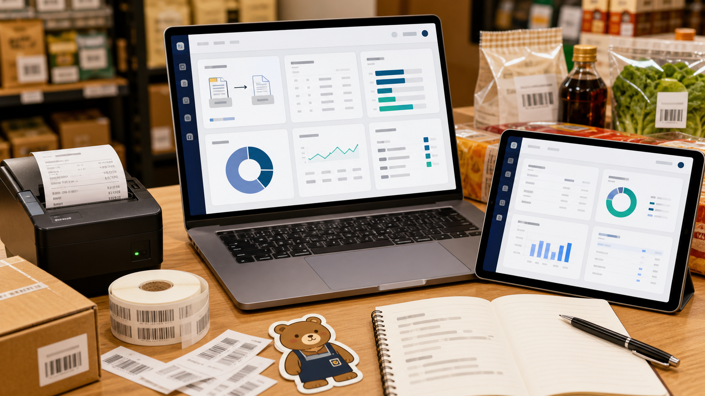
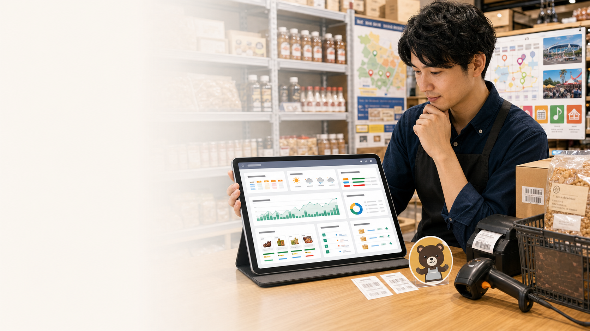
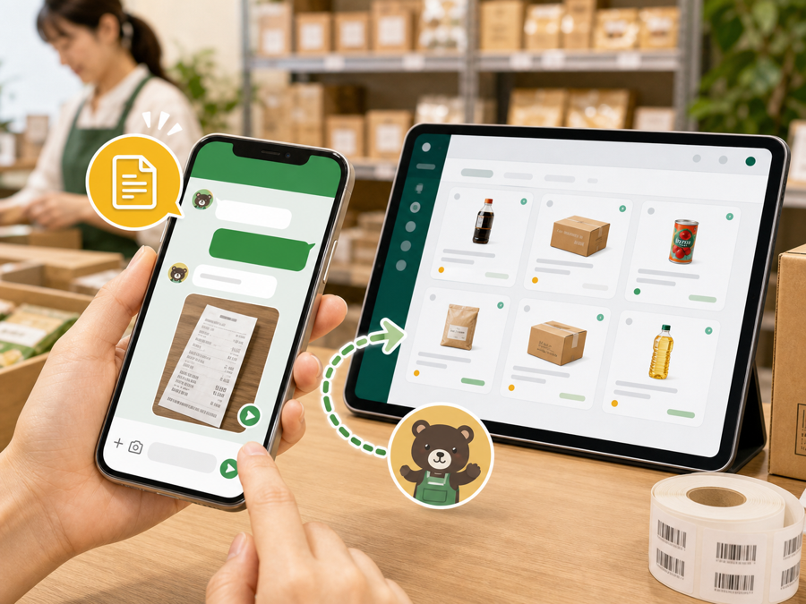
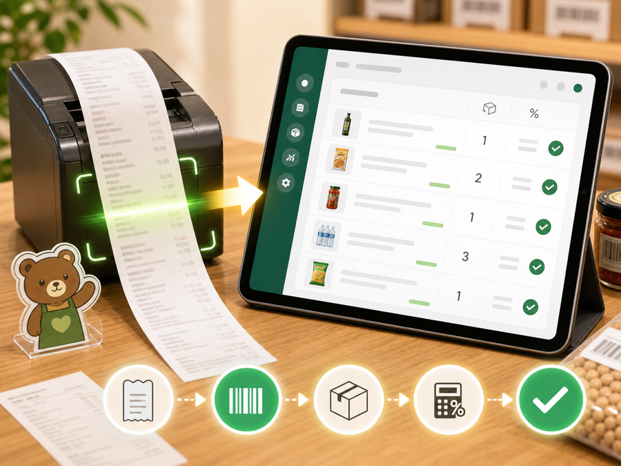
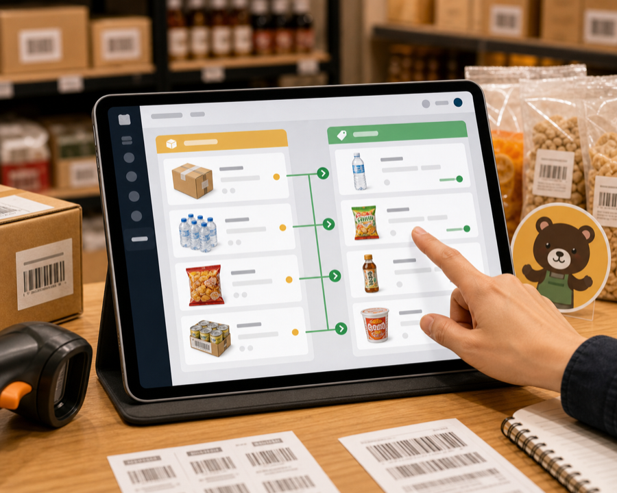
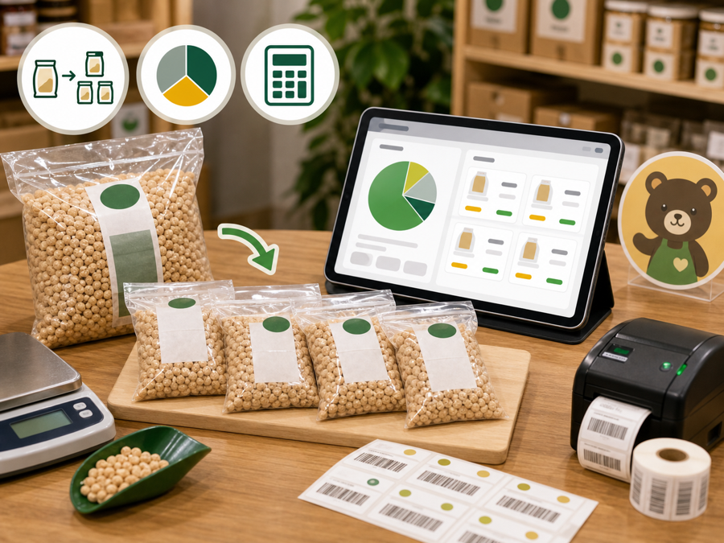
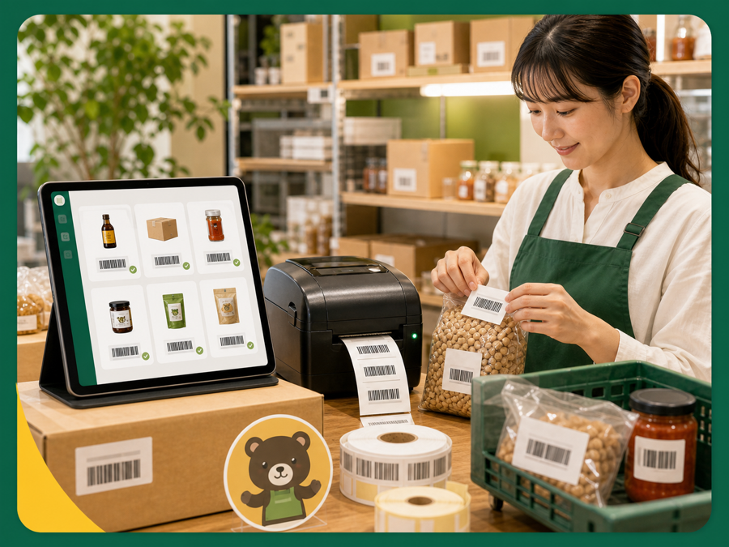
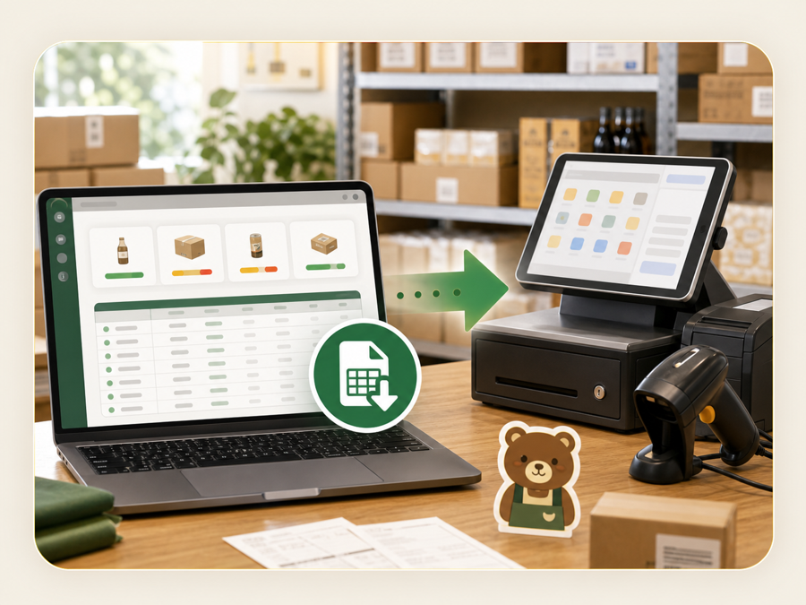
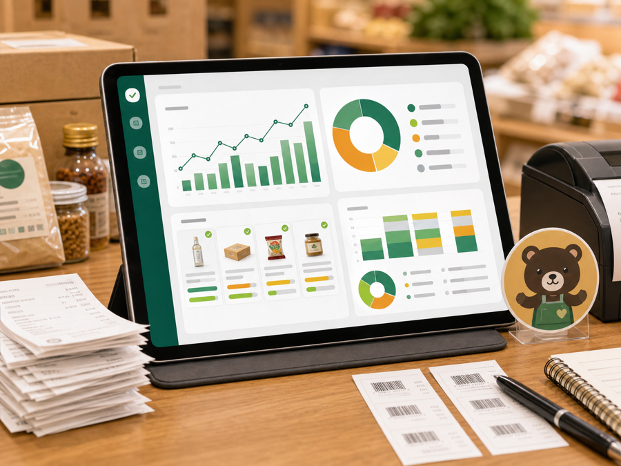
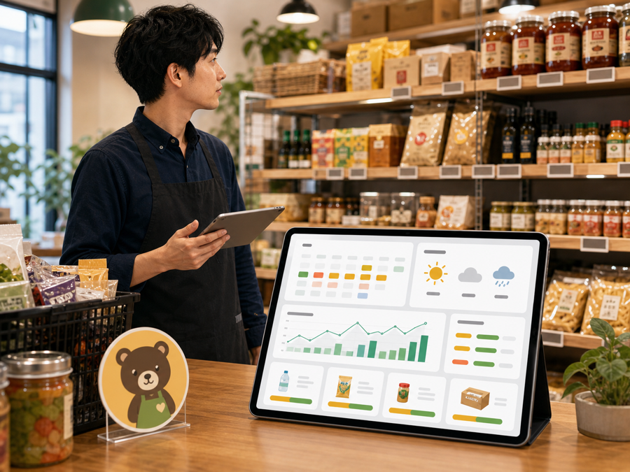

ストックマート向けかんたん業務自動化
クマちゃんシステム
仕入れ、在庫、販売予想、顧客LINE、会計資料をAIでつなぎ、コスト削減と店舗拡大まで見える化します。
導入で得られる5大メリット
今回伝えたいこと
手入力を、確認作業へ。
レシート入力を確認作業へ
写真とOCRで、商品行を候補化。
商品マスターとJANを整備
仕入商品と販売SKUを紐づけ。
確認ボタン中心の画面
現場は確認・修正・出力だけ。
イベントから販売予想
明日の仕入れ候補を先に見る。
画面コンセプト
とにかく簡単。とにかく楽。
送るだけ
買い出し後はLINEにレシート写真を送るだけ。
見るだけ
候補が並び、間違いだけ直して確認。
押すだけ
AirレジCSV、棚卸、月次資料をワンタップ出力。
現在の運用と新運用
紙の山から、店舗の司令塔へ。
業務の流れ
仕入れた瞬間から、販売後の資料までつなげる。
レシート写真をLINE送信。店舗が入荷予定を先に把握。
レシートコード、商品名、数量、税率を読み取り候補化。
仕入商品を小分けSKU、セット商品、JANへ変換。
商品・JAN・売価・税率・在庫をCSV連携から開始。
粗利、税率別、freee、税理士提出資料をまとめる。

管理画面イメージ
店長が見るべき数字だけを、1画面に。
本日の仕入れ要確認 6件
イベント販売予想
近隣イベントから、明日売れそうな商品を先に見る。
公式店舗ページの店舗、天気、曜日、祝日、近隣イベント候補、販売実績を合わせて仕入れ指数を出します。

機能カタログ
主な機能。

01
LINE仕入れ連絡
買った直後に写真共有。店舗が先に準備。

02
レシートOCR
コード、商品名、数量、税率を読み取り。

03
商品マスター
仕入商品と販売SKUを紐づけ。

04
小分け原価
分割、混合、セット、包材費を計算。

05
JAN・バーコード
自社SKU、JAN、Airレジ商品を対応。

06
AirレジCSV
商品、売価、税率、在庫を受け渡し。

07
粗利・税率別集計
軽減税率、通常税率、利益率を月次化。

08
イベント販売予想
地域需要から翌日仕入れを提案。
09
freee・税理士資料
仕入れ、売上、棚卸、証憑を整理。
10
顧客LINEアプリ
商品リクエスト、予約、入荷通知へ。
顧客LINEアプリ
欲しい商品を、仕入れ判断へつなげる。
AIで広がる運用
資料作成から、店舗数拡大まで。
月次資料、顧客接点、販売予想を同じ仕組みに集約。1店舗で整えた型を、多店舗へ横展開できます。
導入の始め方
まずは1店舗の実データで、現場に合う形へ整える。
- Step 1実レシートOCR検証
- Step 2商品マスター設計
- Step 3AirレジCSV確認
- Step 4粗利・税率別集計
- Step 5イベント仕入れ予想
先に必要な資料
削減効果を見える化するために、先に確認するもの。
- 1か月のコストコレシート枚数
- 1枚あたりの商品行数
- レシート入力にかかる時間
- Airレジの商品・売上CSV
- 税理士に渡している資料一式
- 店舗別のイベント販売実績
最後に見る削減効果
年間約182.4万円の固定費・入力工数を削減。
税理士は最終チェックとfreee入力確認に絞り、社内作業は手入力から最終チェック中心へ移します。
Next Action
クマちゃんシステムで、現場はもっと楽になる。
LINE・OCR・JAN・予約に、税理士資料、Airレジ連携、イベント販売予想までまとめて使える統合版です。
在庫管理デモを見る